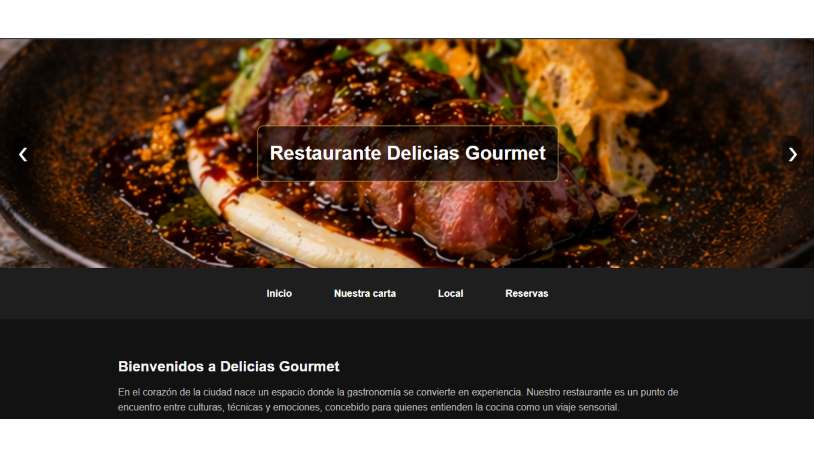
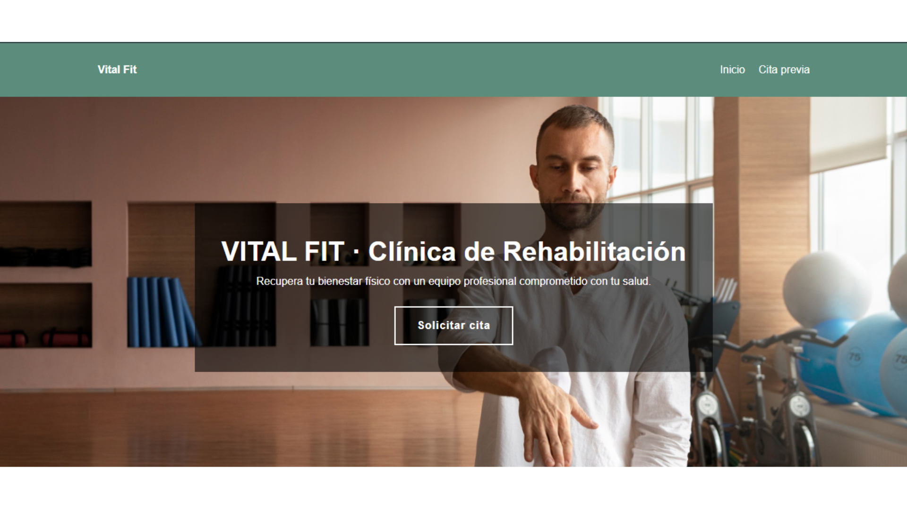
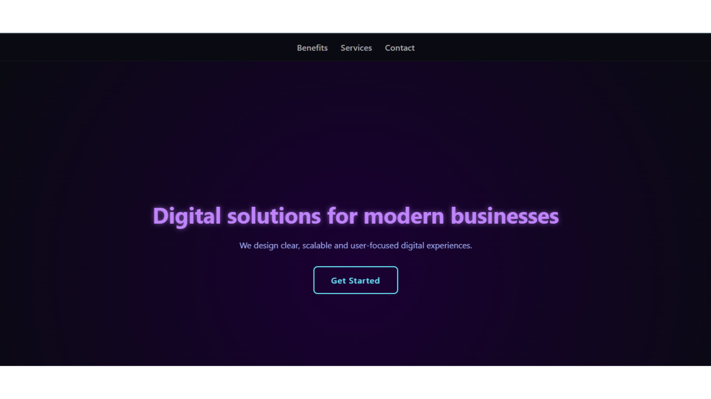

Interfaz web interactiva para restaurante
Desarrollo de una interfaz dinámica con carrusel, navegación estructurada y validación de formularios mediante JavaScript.
Desarrollador web frontend en formación | Estudiante de ASIR. Creo sitios web responsivos y centrados en el usuario, combinando tecnología y estrategia digital.
Ver ProyectosEstoy formándome como desarrollador frontend mientras curso Administración de Sistemas Informáticos en Red (ASIR). Mi perfil combina base técnica y enfoque estratégico, lo que me permite entender no solo cómo se construye una web, sino para qué sirve.
Trabajo con HTML, CSS y JavaScript desarrollando interfaces responsivas, accesibles y centradas en el usuario. Mi objetivo es seguir creciendo en entornos profesionales donde aportar valor desde el primer momento.

Desarrollo de una interfaz dinámica con carrusel, navegación estructurada y validación de formularios mediante JavaScript.

Diseño frontend enfocado en organización del contenido, usabilidad y adaptación a distintos dispositivos.

Interfaz diseñada con jerarquía visual clara, animaciones suaves y navegación centrada en el usuario.